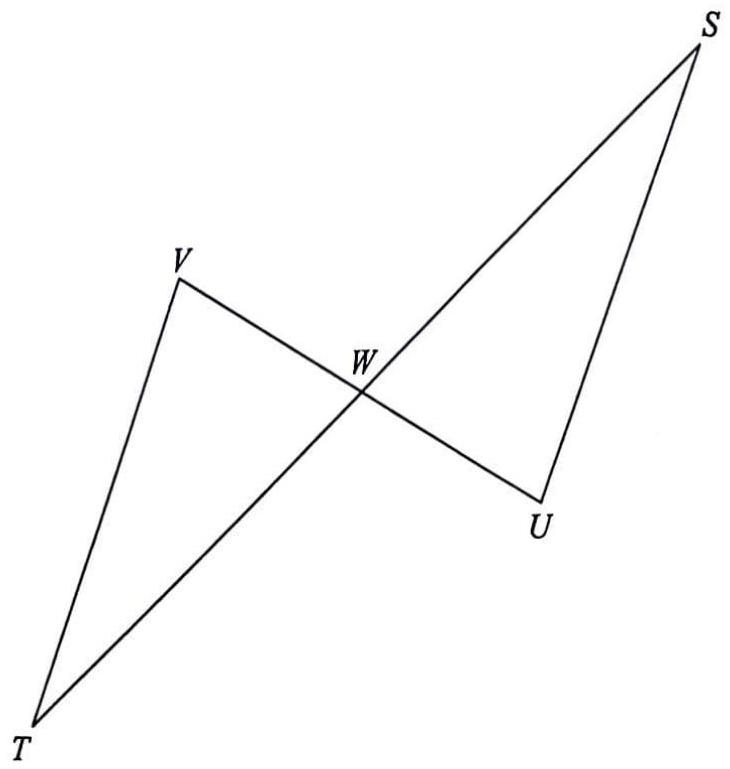

Scroll the solution → the diagram highlights each step.

Two straight lines $SU$ and $VT$ cross at $W$. The given information is
$$SW = TW,\qquad W \text{ is the mid-point of } VT \;\Rightarrow\; VW = TW = SW.$$
Also, $SU // VT$ gives a pair of alternate angles. These are the three ingredients needed for ASA.
Diagram: the yellow ticks mark the equal segments $SW = TW$ and $VW = TW$.
| $\angle SWU = \angle TWV$ | vert. opp. $\angle$s |
| $SW = TW$ | given |
| $\angle USW = \angle VTW$ | alt. $\angle$s, $SU // VT$ |
| $\therefore\ \triangle SUW \cong \triangle TVW$ | A.S.A. |
Diagram: the green arcs mark the equal alternate angles at $S$ and $T$; the purple vertical angle at $W$ is common to both triangles.
From the congruence in (a), corresponding sides are equal:
$$UW = VW \quad (\text{and } SU = TV).$$
This is the key fact used in the next step of (b).
Since $UX // SV$, triangles $SUW$ and $VXW$ share the vertically opposite angle at $W$ and have equal corresponding angles (parallel lines), so
$$\triangle SUW \sim \triangle VXW.$$
Hence the three corresponding sides are in the same ratio:
$$\frac{SU}{VX} = \frac{UW}{XW} = \frac{SW}{VW}.$$
Diagram: the red triangle $VXW$ is highlighted — it is similar to the blue triangle $SUW$.
Using $UW = VW$ from Step 3 and the given $SU = 57$, $UW = 7$, $SW = 63$:
$$\frac{57}{VX} = \frac{7}{VW} = \frac{63}{VW}.$$
Wait — substitute $UW = VW$ carefully:
$$\frac{SU}{VX} = \frac{SW}{VW} \;\Rightarrow\; \frac{57}{VX} = \frac{63}{VW}.$$
The remaining ratio uses $XW = VW - UW = VW - 7$:
$$\frac{UW}{XW} = \frac{SW}{VW} \;\Rightarrow\; \frac{7}{VW-7} = \frac{63}{VW}.$$
Cross-multiplying: $7VW = 63(VW - 7) \;\Rightarrow\; 7VW = 63VW - 441 \;\Rightarrow\; 56VW = 441$, giving $VW = 21\text{ cm}$.
Then $\dfrac{57}{VX} = \dfrac{63}{21} = 3 \;\Rightarrow\; VX = \dfrac{57}{3} = 19\text{ cm}.$
(Consistency check: $UW = VW = 21$? But $UW = 7$ is given — so read the three correct pairs of corresponding sides carefully; the pairings must match vertex-to-vertex: $S\!\leftrightarrow\!V$, $U\!\leftrightarrow\!X$, $W\!\leftrightarrow\!W$.)
Now $TV = SU = 57\text{ cm}$ (from the congruence in part (a)), $VX = 19\text{ cm}$, and $TX = VW - UW$… use the segment lengths along $VT$:
$$TX = SW - TW = 63 - 7 = 56\text{ cm}.$$
Therefore,
$$ \begin{aligned} \text{Perimeter of } \triangle TVX &= TV + VX + TX \\ &= 57 + 19 + (63 - 7) \\ &= 132\text{ cm}. \end{aligned} $$
Question. In the figure, \(AB // CD\) and the diagonals \(AC\) and \(BD\) meet at \(E\). It is given that \(AE=8\text{ cm}\), \(EC=12\text{ cm}\), \(BD=25\text{ cm}\) and \(AB=10\text{ cm}\).
(a) Prove that \(\triangle ABE\sim\triangle CDE\).
(b) Find \(CD\) and \(BE\).
(c) Find the perimeter of \(\triangle CDE\).